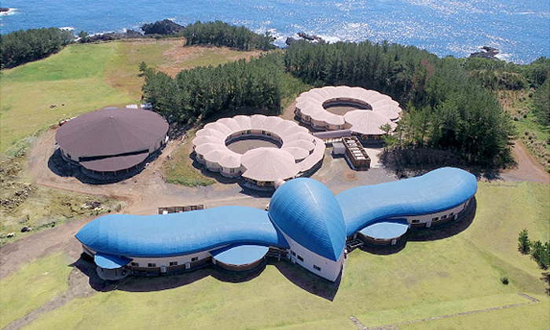
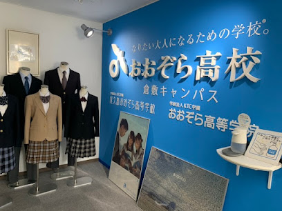

山浦 輔未加の出身校紹介ページ(作成者：大戸井)
 
概要
学校名：おおぞら高等学院
創立：2002年4月設立、2008年岡山キャンパス開校
所属していたコース：基礎コース、進学コース、プログラミングコース
先生の名前：よく覚えていないが、ハリーポッターみたいな顔の先生がいた
基礎コースでやったこと：多分、普通の授業。学年末テストはすごい簡単だった
進学コースでやったこと：小論文とか書いた。数学はやたら難しかった
プログラミングコースでやったこと：消毒液が自動で出てくるロボットとか、二足歩行ができるロボットとか作った
一番印象に残っていること：スクーリングで一週間屋久島に行った事。山を歩き回った。
班員からのコメント
中野：
大戸井：色々なことを体験されていてすごいなあと感じました。
渡邊：
その他の班員一覧
中野 天睛
大戸井 慶伍
渡邊 蒼士
TOPに戻る